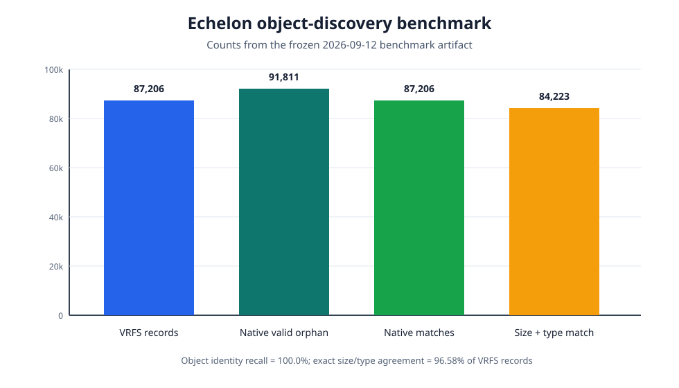
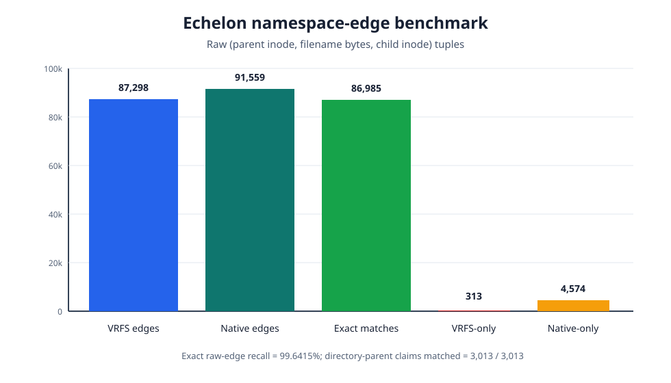

Overview
Reformatting an XFS volume can replace its active allocation indexes and namespace while leaving substantial historical metadata and file data elsewhere on the device. Conventional file carving may recover recognizable byte streams, but often loses the original filenames, parent relationships, fragmentation maps, and the evidential connection between metadata and content.
xfs-reconstruct
explores a metadata-first alternative. It discovers candidate
historical filesystem geometry, validates orphan inode cores outside
the current inode B-tree, reconstructs directory evidence, checks
native extent maps, and extracts files through a read-only pipeline
that records the evidence behind each conclusion.
Research question
Can a parser reconstruct historical XFS objects and namespace evidence after reformatting while quantifying uncertainty and avoiding unsupported names, paths, or payload associations?
The work separates four questions that recovery tools can otherwise collapse: whether an object is structurally valid, whether it belongs to a historical filesystem generation, whether its namespace is defensible, and whether its payload remains recoverable.
Approach
- Discover historical geometry from surviving superblocks and allocation-group metadata.
- Scan aligned inode slots and validate physical self-identity, CRC and UUID state, fork boundaries, and extent plausibility.
- Normalize LOCAL, EXTENTS, and BTREE directory records into provenance-carrying namespace edges.
- Preserve hard links, competing evidence, unresolved roots, and raw filename bytes during graph reconstruction.
- Validate extent maps before atomic extraction and never write to the source device.
Echelon: a real-world recovery case
The case began with an XFS data volume called Echelon that was reformatted during a Nextcloud setup. The new filesystem replaced metadata in allocation group 0, while later allocation groups retained historical inode, directory, and payload evidence. A proprietary recovery manifest served only as an external comparison set; native discovery, parsing, graph construction, and extraction did not depend on it.
The native pipeline found all 87,206 reference inode identities and matched 86,985 of 87,298 raw namespace edges. It extracted 88,559 files representing 114.81 GB without a recorded runtime extraction failure. It withheld 239 objects that lacked a defensible native path instead of assigning guessed destinations.


Conservative recovery
The central design decision is to preserve uncertainty. Missing high-level directory metadata can make a large recovered subtree impossible to place under its original full path. The system therefore labels unresolved roots, retains provenance and conflicts, and withholds output when evidence cannot justify a path. A plausible result is not treated as a proven result.
Scope and next steps
These measurements describe one unusually well-referenced field case and should not be treated as universal XFS recovery rates. The next stage is a controlled synthetic corpus spanning filesystem versions, geometries, directory forms, fragmentation patterns, and reproducible overwrite conditions. That evaluation will measure precision, recall, false joins, byte coverage, and the point at which each layer of evidence becomes unrecoverable.